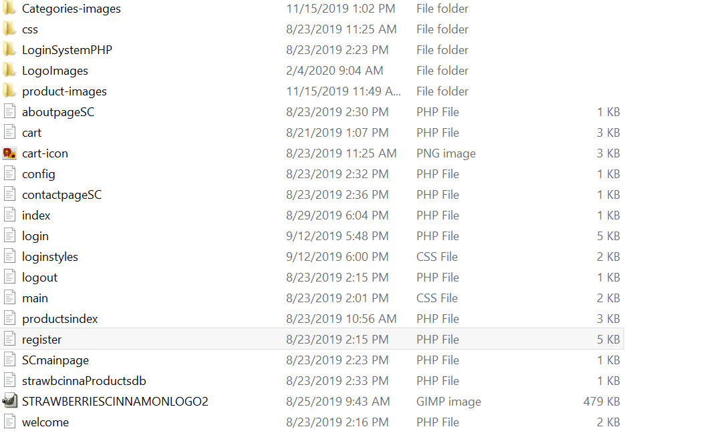
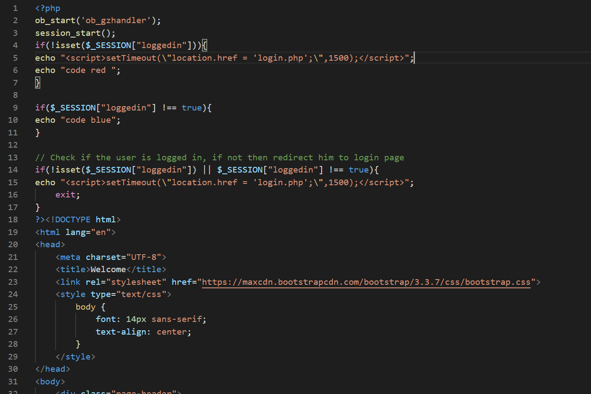
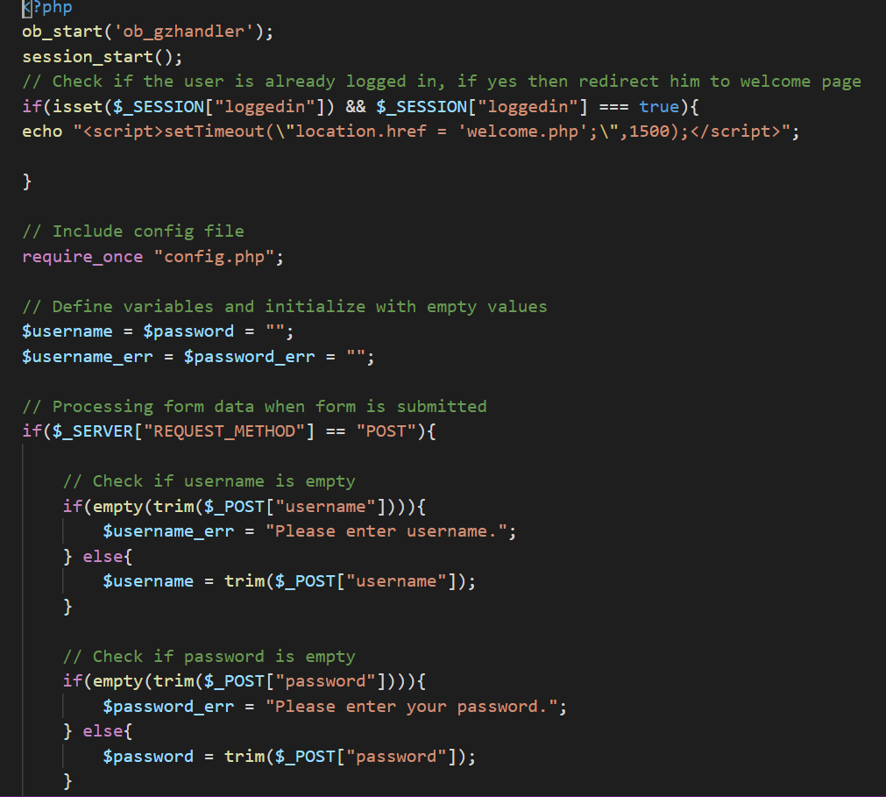
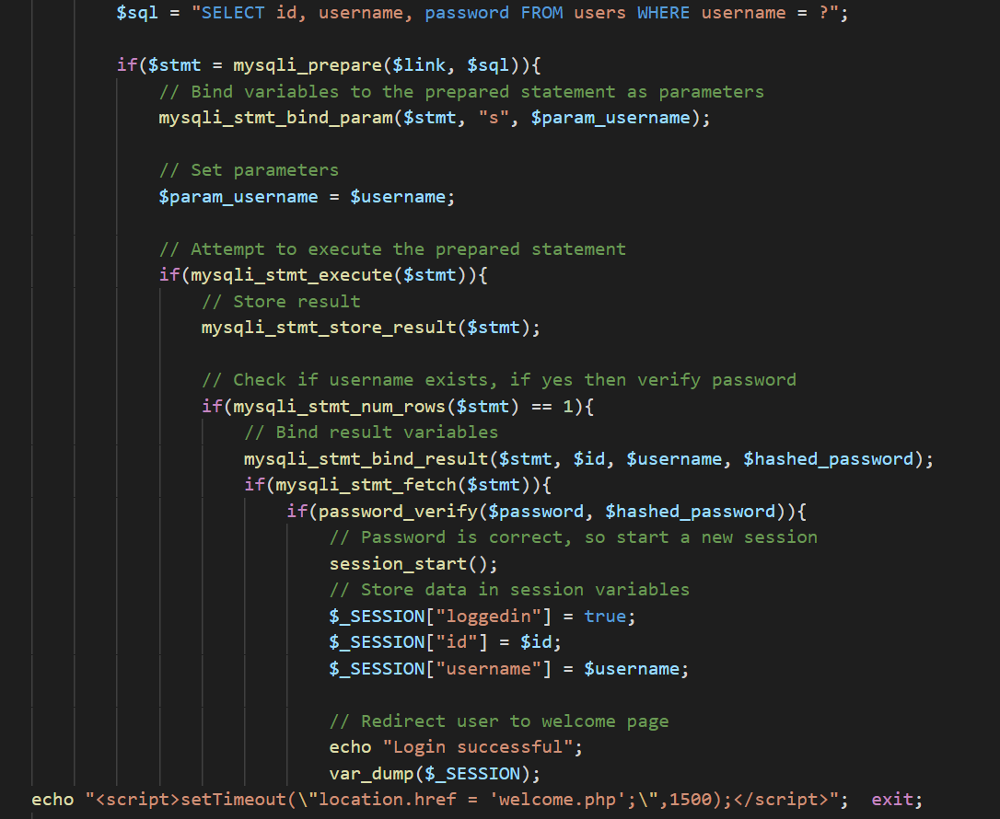

This was one of a series of Wordpress sites I did.
Unfortunutley I discarded much of the code before I could document it.
Wordpress was easy enough to use. The plugins made for quick websites.
I used many Wordpress plugins like Woocommerce to make fast ecommerce sites. But I felt I could, with practice, make a faster, cheaper, and easier to maintain website with a javascript framework.
I estimated programming was a more valuable longterm skill as well.
This site icon and logo were both custom made in GIMP, a photoshop like photo editing software.
Below is the general file structure of a version of the site that utilized a custom PHP/SQL login system.
As you can see I was still learning, it's a bit messy.

Below is the code for the welcome/index page, which redirects to the login PHP code avalible further down.
This code is only partially original. It did take significant effort to get it working for my specific needs.

Login PHP code below.

